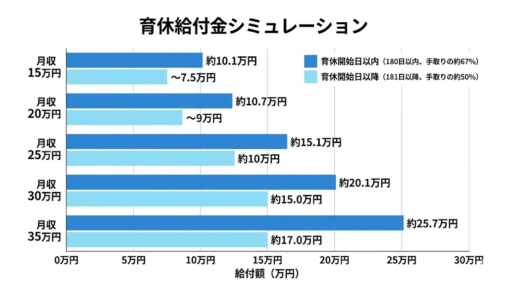

1. はじめに
「育休中、実際にいくらもらえるの？」「生活できるか不安…」——育休取得を検討している方が最も気になるのが、育児休業給付金の金額です。
結論からいうと、育休開始から6ヶ月間は月収の約67%、それ以降は50%が支給されます。さらに、社会保険料の免除も加わるため、手取りベースでは休業前の約80%程度になることが多いです。
この記事では、給付金の計算方法を月収別のシミュレーションとともにわかりやすく解説します。
・育児休業給付金の支給率（67%・50%）の仕組み
・月収別の受取額シミュレーション（20万〜40万円）
・社会保険料免除の効果と申請手続き
2. 育児休業給付金とは
育児休業給付金は、育児休業を取得した労働者に支給される給付金です。会社から支払われるのではなく、雇用保険（ハローワーク）から支給されます。
| 項目 | 内容 |
|---|---|
| 支給元 | 雇用保険（ハローワーク）※会社ではない |
| 課税区分 | 非課税（所得税・住民税の課税対象外） |
| 受給条件① | 雇用保険に加入していること |
| 受給条件② | 育休開始前2年間に、賃金支払基礎日数が11日以上ある月が12ヶ月以上あること |
| 対象外 | 自営業・フリーランス・雇用保険未加入者 |
正社員だけでなく、雇用保険に加入しているパートタイムや派遣社員も受給できます。「育休中はお金がもらえない」と思っている方も、ぜひ確認してみてください。
3. 図解：給付率の変遷
育児休業給付金の支給率は、育休開始から180日（約6ヶ月）を境に変わります。
※ 賃金日額に上限・下限があります。上限額は毎年8月に改定されます。

4. 計算方法と月収別シミュレーション
計算式
育児休業給付金の金額は、「休業開始時賃金日額」をもとに計算されます。
最初の180日（支給率67%）
休業開始時賃金日額 × 支給日数 × 67%
181日目以降（支給率50%）
休業開始時賃金日額 × 支給日数 × 50%
「賃金日額」は育休開始前6ヶ月の賃金合計を180で割った金額です。月収（額面）の場合、概算では以下のシミュレーション表を参考にしてください。
月収別シミュレーション（概算）
| 月収（額面） | 最初の6ヶ月 （月額・67%） |
7ヶ月目以降 （月額・50%） |
1年間の合計 |
|---|---|---|---|
| 20万円 | 約13.4万円 | 約10万円 | 約140万円 |
| 25万円 | 約16.8万円 | 約12.5万円 | 約176万円 |
| 30万円 | 約20.1万円 | 約15万円 | 約211万円 |
| 35万円 | 約23.5万円 | 約17.5万円 | 約246万円 |
| 40万円 | 約26.8万円 | 約20万円 | 約281万円 |
※ 上記はあくまで概算です。実際の支給額は賃金日額の計算方法や上限額により異なります。賃金日額には上限があり（2026年度は約16,735円）、高収入の方は上限が適用される場合があります。
育児休業給付金は非課税です。さらに社会保険料（健康保険・厚生年金）も免除されるため、手取りベースでは休業前の約80%程度になることが多いです。「給付金67%では生活できない」と思っていた方も、社会保険料免除を合わせると想定より多く受け取れます。
5. 支給期間
育児休業給付金の支給期間は、取得する育休の種類によって異なります。
| ケース | 支給期間 | 備考 |
|---|---|---|
| 通常 | 子が1歳まで | 原則の育休期間 |
| パパ・ママ育休プラス | 子が1歳2ヶ月まで | 両親がともに育休を取得する場合に適用可 |
| 延長（第1） | 子が1歳6ヶ月まで | 保育所に入れない場合。不承諾通知書が必要 |
| 延長（第2） | 子が2歳まで | 1歳6ヶ月時点でも保育所に入れない場合。不承諾通知書（再取得）が必要 |
育休を延長した場合、育児休業給付金も延長期間中（最長2歳まで）支給されます。ただし、181日目以降は支給率が50%になります。
6. 社会保険料の免除
育休期間中は、健康保険と厚生年金の保険料が労働者・会社の両方の負担分ともに免除されます。これは給付金に上乗せされる実質的なメリットです。
- 免除される保険料：健康保険料・厚生年金保険料（介護保険料含む）
- 免除されない保険料：雇用保険料（育休中は給与がないため自動的に発生しない）
- 年金への影響：免除期間も厚生年金の加入期間としてカウントされる（将来の年金額には影響しない）
社会保険料の免除は、月末時点で育休中であれば当月分が免除されます。月の途中から育休を開始した場合でも、月末に育休中であれば当月分が免除の対象です。
7. 申請手続き
育児休業給付金の申請は、原則として勤務先の会社がハローワークに行います。
育休開始予定日の1ヶ月前までに書面で申し出ることが必要です（育児・介護休業法）。
育休開始から約2ヶ月後に初回の支給申請が行われます。会社の担当者が手続きを行う場合がほとんどです。
育児休業給付金は2ヶ月に1回のサイクルで申請・支給されます。
主な必要書類：
- 育児休業給付金支給申請書
- 賃金台帳・出勤簿等（賃金日額の確認用）
- 母子健康手帳の写し（子の生年月日確認用）
保育園の空き状況も確認しよう
育休中に申し込んでおくと、復帰のタイミングを計画的に決められます。
8. よくある質問
Q. 育休中も住民税はかかりますか？
はい。住民税は前年の所得に基づいて課税されるため、育休中でも支払いが必要です。育休中は給与から天引きされなくなるため、納税通知書が自宅に届き、自分で納付することになります。特に育休開始翌年の住民税は高額になりがちなので、事前に資金を用意しておくことをおすすめします。
Q. 確定申告は必要ですか？
育児休業給付金は非課税のため、通常は確定申告の必要はありません。ただし、育休前に給与収入があった年は年末調整が必要な場合があります。医療費控除や住宅ローン控除など他の事由がある場合は確定申告を行いましょう。
Q. 育休中に退職したら給付金はどうなりますか？
育休中に退職した場合、退職日の属する支給対象期間を最後に給付金の支給は終了します。退職後は条件を満たせば雇用保険の基本手当（いわゆる失業給付）に切り替えられる場合がありますが、受給期間の延長申請が必要です。会社の退職手続きを行う際にハローワークでも相談してみてください。